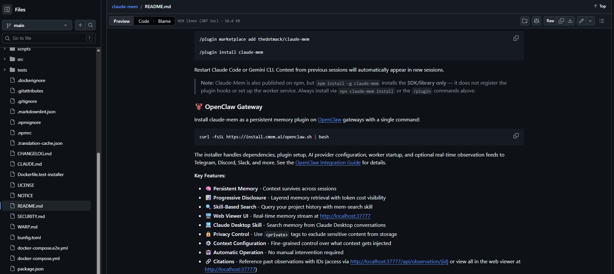
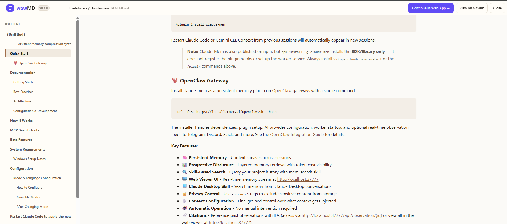

L’extension transforme le Markdown GitHub en lecteur concentré : plan, sections repliables, code et tableaux.


Plus qu'un lecteur, pas un éditeur. Marquez ce qui compte, gardez les annotations ancrées quand les fichiers changent, puis livrez des sorties propres pour les humains, l'IA ou Obsidian.
L’extension transforme le Markdown GitHub en lecteur concentré : plan, sections repliables, code et tableaux.


Ouvrez du Markdown local, marquez des passages et ajoutez des notes avec quatre types de relecture, gardez chaque note ancrée d'une version à l'autre, puis exportez en HTML pour les humains, en Markdown relu pour Obsidian ou en ticket pour une IA.
wowMD est une couche de révision locale pour les longs documents Markdown. Vous lisez avec structure, jugez les passages avec quatre types de révision, les annotations restent ancrées quand le fichier change, puis vous exportez le résultat pour des personnes, Obsidian, une sauvegarde ou une IA — sans modifier le fichier original.
Oui, pendant la bêta. L'extension Chrome est gratuite, et wowMD Pro est gratuit pendant la bêta.
Non. Les fichiers locaux sont traités dans votre navigateur, les annotations sont stockées dans les données de site du navigateur, et les exports n'ont lieu que lorsque vous les lancez. wowMD ne modifie ni ne téléverse jamais le fichier original.
L'extension transforme les pages Markdown publiques de GitHub en un lecteur structuré avec plan, pliage, code et tableaux. wowMD Pro est l'espace de révision complet pour les fichiers Markdown locaux : annotations typées, notes, ancrage entre versions, Overall Review Map et quatre formats d'export.
Quatre sorties selon le lecteur : HTML hors ligne pour les personnes, Markdown révisé pour Obsidian, Backup JSON pour sauvegarder et réimporter les annotations, et Ticket JSON comme ordre de travail structuré pour un outil IA ou un éditeur.
wowMD n'exécute aucune analyse IA sur vos documents. L'IA est optionnelle et externe : vous pouvez exporter un Ticket JSON et décider vous-même de le confier à un outil IA pour révision.